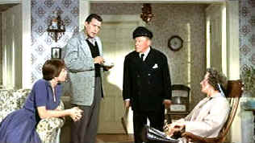

| Trouble with Harry, The (SE)/C-,B+ |
| Universal/1955/100/ANA 1.85 |
Looking back at the body of Alfred Hitchcock's work it's clear that he loved his humor. In the midst of some of his most suspenseful films, he dares to divert the audience and subvert the material with off-center comic dalliance. The director's macabre sensibility usually worked well in these small doses. The Trouble with Harry is pure overdose. It's coy, cloying, seldom funny. It's one of those Hitchcock dalliances, stretched painfully into a film. The trouble with The Trouble with Harry is that it's just not funny.
 |
| Complicity conference. ©Universal |
The best thing about Harry are the lovely New England fall colors. Some of
them are real, some imported to the Hollywood Paramount lot. The silly plot revolves around a dead
body for which everybody seems to think they are responsible. There's the gentle old sea captain
who thinks his pop gun hit the wrong target, the unmarried Miss Gravely who attacked the dead man,
and then there's Jennifer Rogers who clomped him over the head with a bottle. The local artist Sam
Marlowe shows more style with a shovel than a paint brush.
The actors are a likeable ensemble. John Forsythe plays artist Sam Marlowe
effectively and Edmund Gwenn does his best to fill the sails of Captain Wiles with his patented
brand of apple cheek charm. Shirley MacLaine makes her screen debut as Jennifer Rogers. She fits
right in with all those bright colors. Hitchcock provides a double dose of Mildreds in The
Trouble with Harry and Mildred Natwick and Mildred Dunnock work very well. Do you think
Hitchcock may have derived special pleasure in casting two Mildreds in one flick? Jerry Mathers is
little Arnie Rogers. There's some peripheral humor is seeing "Beaver" running around with
a stiff rabbit. I can't fault the actors. They are buried under an avalanche of Hitchcock humor
gone awry.
The breadth of magnificent autumn colors captured on this DVD transfer is
pure pleasure. Fall leaves, painted and otherwise, are fully saturated. The image is sharp with
little evidence of edge enhancement. The night scenes retain an artificial luster all aglow in moon
light. Dark details are pronounced out front. Contrast is very strong and the overall pop of the
picture is outstanding. I can't imagine Harry looking as good in theaters. Bernard Herman's
score is more entertaining the action it tries to embellish with comic chords. It's delivered
cleanly in Dolby Digital 2 channel mono.
The half hour documentary remembering Harry includes talking head
commentary from John Forsythe, John Michael Hayes, Herbert Coleman and Patricia Hitchcock O'Connell
and Bernard Hermann scholar Steven C. Smith. Forsythe shares a couple of Hitchcock stories, replete
with Hitchcock's oft imitated delivery. Associate producer Coleman recalls the origins of the
production and some of the problems they faced while making the film. I liked Stephen Smith's
Hermann tales the best. Screenwriter Hayes muses on his ongoing collaboration with Hitchcock.

Selections from the Feature Archive include articles on
Akira Kurosawa, Frank
Darabont, Blonde Bimbos, Hollywood Street Gangs, or Vietnam: The
Hollywood Pariah, and many more....
Body Parts

Hollywood's long fascination with parts of the body is explored
piece by piece.

|
Home Theater Talk
Cartoons |


Excellent resource for movie review links, with many early looks.

A great place to link through the noses of Mount Rushmore into the mind
behind North by Northwest.

DVD News, Reviews, Previews, Easter Eggs and more.